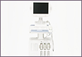
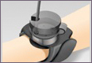
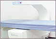
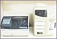

診療科目のご案内
整形外科一般
変形性腰椎症、変形性膝関節症、変形性足関節、変形性股関節症、臼蓋形成不全
腰椎椎間板ヘルニア、頚椎椎間板ヘルニア、変形性頚椎症
肩関節周囲炎（50肩） 上腕骨外側上顆炎（テニス肘）腰部脊柱管狭窄症
神経障害性疼痛 外反母趾 撓骨遠位端骨折
スポーツ外来
野球肩、野球肘、靭帯損傷、腰椎分離症、TFCC損傷
シンスプリント、ジャンパー膝、疲労骨折、アキレス腱損傷
膝靭帯損傷、半月板損傷、足関節靭帯損傷、小児扁平足障害
骨粗鬆症外来
脊椎圧迫骨折
関節リウマチ
初期リウマチ診断（採血、超音波エコー診断）、内服治療、生物学的製剤
運動器リハビリテーション
理学療法 物理療法（骨癒合促進超音波治療）
メタボリックシンドローム運動指導
装具製作
当院で可能な検査

フルデジタル超音波診断
NemioXG-1を使用し、クリアな画像で患者さんと一緒に検査画像を確認できる検査です。体に無害な超音波を当てる為、妊娠中の方でも検査可能です。 カラードプラー検査もできるため、検査部位の血流状態も観察可能です。実際の使用疾患としてスポーツ障害、五十肩や肩の腱板断裂、軟部腫瘍、ガングリオン、手根管症候群などの検査が可能です。

超音波骨折治療
微弱な超音波を使って、骨の癒合を促進させます。骨癒合期間を約40%短縮し、遷延癒合や偽関節などの治りづらい骨折に対しても高い治療効果を示す治療です。
低出力のため振動や熱もほとんど感じず、副作用もほとんど報告されておりません。早期の職場復帰やスポーツをされている方におすすめ致します。妊娠中の方も大丈夫です。

骨密度検査(ＤＸＡ法)
まつもと整形外科クリニックでは、骨粗鬆症の検査に力を入れています。様々な検査法がありますが、最も正確に骨密度を測定できるDXA法(デキサ法)を導入しています。所要時間は、5分〜10分です。

血液検査(スピーディー測定)
まつもと整形外科クリニックにて採血の際、クリニック内でのスピーディー測定が可能となりました。赤血球・白血球・血小板測定などを行います。
- 単純Ｘ線撮影
- Ｘ線透視撮影
- 超音波検査
当院で可能な手術
- 腱鞘切開
- 手根管解放術
- 巻爪手術